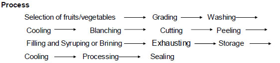

HORT 381 :: Lecture 14 :: PRESERVATION THROUGH CANNING, BOTTLING, FREEZING, DEHYDRATION, DRYING, ULTRAVIOLET AND IONIZING RADIATIONS

PRESERVATION THROUGH CANNING, BOTTLING, FREEZING, DEHYDRATION, DRYING, ULTRAVIOLET AND IONIZING RADIATIONS
PRESERVATION THROUGH CANNING
The process of sealing food stuffs hermetically in containers and sterilizing them by heat for long storage is known as canning.
In 1804, Appert in France invented a process of sealing foods hermetically in containers and sterilizing them by heat. In honour of the inventor, canning is also known as appertizing. Saddington in England was the first to describe a method of canning of foods in 1807. In 1810, Peter Durand, another Englishman, obtained the first British Patent on canning of foods in tin containers. In 1817, William Underwood introduced canning of fruits on a commercial scale in U.S.A.
Fruits and vegetables are canned in the season when the raw material is available in plenty. The canned products are sold in the off-season and give better returns to the grower.
Principles and Process of Canning
Principle
Destruction of spoilage organisms within the sealed container by means of heat.

(1) Selection of fruits and vegetables
- Fruits and vegetables should be absolutely fresh.
- Fruits should be ripe, but firm, and uniformly mature. Over-ripe fruits should be rejected
- because they are infected with microorganisms and give a poor quality product. Unripe
- fruits should be rejected because they generally shrivel and toughen on canning.
- All vegetables except tomatoes should be tender.
- Tomatoes should be firm, fully ripe and of deep red colour.
- Fruits and vegetables should be free from dirt.
- They should be free from blemishes, insect damage or mechanical injury.
(2) Grading
The selected fruits and vegetables are graded according to size and colour to obtain uniform quality. This is done by hand or by machines such as screw grader and roller grader. Fruits like berries, plums and cherries are graded whole, while peaches, pears, apricots, mangoes, pineapple, etc., are generally graded after cutting into pieces or slices.
(3) Washing
It is important to remove pesticide spray residue and dust from fruits and vegetables. One gram of soil contains 1012 spores of microorganisms. Therefore, removal of microorganisms by washing with water is essential. Fruits and vegetables can be washed in different ways. Root crops that loosen in soil are washed by soaking in water containing 25 to 50 ppm chlorine (as detergent). Other methods of washing are spray washing, steam washing, etc.
(4) Peeling
The objective of peeling is to remove the outer layer. Peeling may be done in various ways.
Hand peeling
It is done mostly in case of fruits of irregular shape, e.g., mango and papaya, where mechanical peeling is not possible.
Steam peeling
Free-stone and clingstone peaches are steam peeled in different ways. The former are cut and steam washed. Potatoes and tomatoes are peeled by steam or boiling water.
Mechanical peeling
This is done in case of apples, peaches, pineapples and cherries and also for root vegetables like carrots, turnips and potatoes.
Lye peeling
Fruits like peaches, apricots, sweet oranges, mandarin oranges and vegetables like carrots and sweet potatoes are peeled by dipping them in 1 to 2 per cent boiling caustic soda solution (lye) for 30 seconds to 2 minutes depending on their nature and maturity. Hot lye loosens the skin from the flesh by dissolving the pectin. The peel is then removed easily by hand. Any trace of alkali is removed by washing the fruit or vegetable thoroughly in running cold water or dipping it for a few seconds in 0.5 per cent citric acid solution. This is a quick method where by cost and wastage in peeling is reduced.
Flame peeling
It is used only for garlic and onion which have a papery outer covering. This is just burnt off. Vegetables like peas are shelled, carrots are scarped, and beans are snipped or trimmed.
(5) Cutting
Pieces of the size required for canning are cut. Seed, stone and core are removed. Some fruits like plum from which the seeds cannot be taken out easily are canned whole.
(6) Blanching
It is also known as scalding, parboiling or precooking. It is usually done in case of vegetables by exposing them to boiling water or steam for 2 to 5 minutes, followed by cooling. The extent of blanching varies with the food. Generally fruits are not blanched. This brief heat treatment accomplishes the following:
- Inactivates most of the plant enzymes which cause toughness, discolouration
(polyphenol oxidase), mustiness, off-flavour (peroxidase), softening and loss of nutritive value.
- Reduces the area of leafy vegetables such as spinach by shrinkage or wilting,
making their packing easier.
- Removes tissue gases which reduce sulphides.
- Reduces the number of microorganisms by as much as 99%.
- Enhances the green colour of vegetables such as peas, broccoli and spinach.
- Removes saponin in peas.
- Removes undesirable acids and astringent taste of the peel, and thus improves
flavour.
- Removes the skin of vegetable such as beetroot and tomatoes which helps in their peeling.
Disadvantages
- Water-soluble materials like sugar and anthocyanin pigments are leached by boiling water.
- Fruits lose their colour, flavour and sugar.
(7) Cooling
After blanching, the vegetables are dipped in cold water for better handling and keeping them in good condition.
(8) Filling
Before filling, cans are washed with hot water and sterilized but in developing countries these are subjected to a jet of steam to remove dust and foreign material. Automatic, large can-filling machines are used in advanced countries but choice grades of fruits are normally filled by hand to prevent bruising. In India, hand filling is the common practice. After filling, covering with syrup or brine is done and this process is called syruping or brining.
A 1-b butter size can should hold 230 285 g of fruit slices and a A 2 ½ size can 510 to 565 g.
The blanched vegetables are packed in sterilized cans which should hold the drained weight of vegetables as specified below:
1 lb butter size can - 269-283 g
A 2 ½ size can - 538-566 g
Pint size glass jar - 283-311 g
(i) Syruping
A solution of sugar in water is called a syrup. Normally sucrose syrup is used in canning. Syrup is added to improve the flavour and to serve as a heat transfer medium for facilitating processing. Syruping is done only for fruits.
Strained, hot syrup of concentration 20 to 55o Brix is poured on the fruit. Fruits rich in acid require a more concentrated syrup than less acid ones. The syrup should be filled at about 79 to 82oC, leaving a head space of 0.3 to 0.5 cm. Sometimes citric acid and ascorbic acid are also mixed with the syrup to improve flavour and nutritional value, respectively.
(ii) Brining
A solution of salt in water is called brine. The objective of brining is similar to that of syruping. Only vegetables are brined. Common salt of good quality free from iron should be used. Hot brine of 1 to 3 per cent concentration is used for covering vegetables and is filled at 79 to 82oC, leaving a head space of 0.3 to 0.5 cm. The brine should be filtered through a thick cloth before filling.
After syruping or brining the cans are loosely covered with lids and exhausted. Lidding has certain disadvantages such as spilling of the contents and toppling of the lids. Hence lidding has now been modernized by ‘clinching’ process in which the lid is partially seamed. The lid remains sufficiently loose to permit the escape of dissolved as well as free air from the can and also the vapour formed during the exhausting process.
(9) Exhausting
The process of removal of air from cans is known as exhausting. After filling and lidding or clinching, exhausting is essential. The major advantages of exhausting are as under:
a) Corrosion of the tinplate and pinholing during storage is avoided.
b) Minimizes discolouration by preventing oxidation.
c) Helps in better retention of vitamins particularly vitamin C.
) Prevents bulging of cans when stored in a hot climate or at high altitude.
e) Reduces chemical reaction between the container and the contents.
f) Prevents development of excessive pressure and strain during sterilization.
Containers are exhausted either by heating or mechanically. The heat treatment method is generally used. The cans are passed through a tank of hot water at 82 to 87oC or move on a belt through a covered steam box. In the water exhaust box, the cans are placed in such a manner that the level of water is 4-5 cm below their tops. The exhaust box is heated till the temperature of water reaches 82 to 100oC and the centre of the can shows a temperature of about 79oC. The time of exhausting varies from 6 to 10 minutes, depending on the nature of the product. In the case of glass jars or bottles, vacuum closing machines are generally used. The bottles or jars are placed in a closed chamber in which a high vacuum is maintained.
It is preferable to exhaust the cans at a lower temperature for a longer period to ensure uniform heating of the contents without softening them into pulp. Exhausting at high temperature should be avoided because the higher the temperature, the more is the volume of water vapour formed, and consequently the greater the vacuum produced in the can.
(10) Sealing
Immediately after exhausting the cans are sealed airtight by means of a can sealer. In case of glass jars a rubber ring should be placed between the mouth of the jar and the lid, so that it can be sealed airtight. During sealing the temperature should not fall below 74oC.
(11) Processing
Heating of foods for preserving is known as processing, however, in canning technology processing means heating or cooling of canned foods to inactivate bacteria. Many bacterial spores can be killed by either high or every low temperature. Such drastic treatment, however affects the quality of food. Processing time and temperature should be adequate to eliminate all bacterial growth. Moreover, over-cooking should be avoided as it spoils the flavour as well as the appearance of the product.
Almost all fruits and acid vegetables can be processed satisfactorily at a temperature of 100oC, i.e., in boiling water. The presence of acid retards the growth of bacteria and their spores. Further, they do not thrive in heavy sugar syrup which is normally used for canning of fruits. Vegetables (except the more acid ones like tomato and rhubarb) which are non-acid in nature, have a hard texture, and proximity to soil which many infect them with spore-bearing organisms processed at higher temperatures of 115 to 121oC.
The sourness of fruits and vegetables is due to their acid content (measured in pH) which has a great influence upon the destruction of microorganisms. The lower the pH the greater is the ease with which a product can be processed or sterilized. Fruits and vegetables can be classified into the following four groups according to their pH value.
Class |
pH |
Product |
Low acid (called non-acid) |
Above 5.0 |
Vegetables such as peas, lima bean, asparagus, cauliflower, potato, spinach, beet, corn, french bean |
Medium acid |
4.5-5.0 |
Turnip, carrot, okra, cabbage, pumpkin, beet, green bean, etc., and products like soups and sauces |
Acid |
3.7-4.5 |
Tomato, pear, banana, mango, jackfruit, pineapple, sweet cherry, peach, apple and other fruits |
High acid |
Below 3.7 |
Citrus juice, rhubarb, prune, sauerkraut, pickle, chutney, etc. |
Bacterial spores can be more easily destroyed at pH 3.0 (fruits) than at pH 5.0 to 6.0 (vegetables, except tomato and rhubarb). Bacterial spores do not grow or germinate below pH 4.5. Thus, a canned product having pH less than 4.5 can be processed in boiling water but a product with pH above 4.5 requires processing at 115 to 121oC under a pressure of 0.70 to 1.05 kg/cm2 (10 to 15 lb/sq inch). It is essential that the centre of the can should attain these high temperatures.
The temperature and time of processing vary with the size of the can and the nature of the food: the larger the can, the greater is the processing time. Fruits and acid vegetables are generally processed in open type cooker, continuous non-agitating cookers, while vegetables (non-acid) are processed under steam pressure in closed retorts known as automatic pressure cookers and continuous agitating cookers. In India, small vertical stationary retorts (frontispiece) are generally used for canned vegetable processing. The sealed cans are placed in the cookers, keeping the level of water 2.5 to 5.0 cm above the top of the cans. The cover of the cooker is then screwed down tightly and the cooker heated to the desired temperature. The period of sterilization (process) should be counted from the time the water starts boiling. After heating for the required period the cooker is removed from the fire and the petcock is opened. When the pressure comes down to zero the cover is removed and the cans are taken out.
(12) Cooling
After processing, the cans are cooled rapidly to about 39oC to stop the cooking process and to prevent stack-burning. Cooling is done by the following methods.
(i) Dipping or immersing the hot cans in tanks containing cold water.
(ii) Letting cold water into the pressure cooker specially in case of vegetables.
(iii) Spraying cans with jets of cold water; and
(iv) Exposing the cans to air.
Generally the first method, i.e. dipping the cans in cold water, is used. If canned products are not cooled immediately after processing, peaches and pears becomes dark in colour, tomatoes turn brownish and bitter in taste, peas become pulpy with cooked taste and many vegetables develop flat sour (become sour).
(13) Storage
After labelling the cans, they should be packed in strong wooden cases or corrugated cardboard cartons and stored in a cool and dry place. The outer surface of the cans should be dry as even small traces of moisture sometimes induce rusting. Storage of cans at high temperature should be avoided, as it shortens the shelf-life of the product and often leads to the formation of hydrogen swell.
The marketable life of canned products varies according to the type of raw materials used. Canned peach, grapefruit, pineapple, beans, spinach, pea, celery, etc. can be stored for about two years, while pear, apricot, carrot, beetroot, tomato, etc. can be stored for a comparatively long period.
PRESERVATION BY BOTTLING
Bottles have proved to be very good containers for home preservation of fruits. Although their initial cost is high, they can be used several times and last for many years if carefully handled.The fruits look attractive through glass and do not develop metallic flavour. Bottling does not need a sealing machine.
There are many types of glass containers of different shapes and sizes and with various types of hermetic seals. The products remain in a very hygienic condition and do not come into contact with rubber or metal.
Filling and syruping
The bottles are thoroughly washed and sterilized. The fruit slices are filled leaving about 3cm space at the top of the Jar or bottle. The sugar syrup recommended for different fruits is filled boiling hot leaving ahead space of 1-1.5cm.
Exhausting and sterilization
Separate exhausting of bottles is not required and it is done simultaneously with sterilization by putting a pad of cloth under the bottles. The bottles should not be abruptly immersed in hot water, otherwise they may break because of sudden rise in temperature. The temperature of the water should about the same as that of the same as that of the contents and should be raised gradually and the bottles kept i9n the boiling water for the required time. At the start of sterilization the lids are left loose and the level of boiling water should come up to the neck of the bottle, but when sterilization is over the mouths of bottles and jars should be immediately closed or corked tightly.
Cooling and storage
These are done as for canning of fruits and vegetables.
PRESERVATION BY FREEZING
At temperature below the freezing point of H2O, growth of microorganisms and enzyme activity are reduced to minimum. Most perishable foods can be preserved for several months. Fruits, vegetables, juices and fleshy foods (meat poultry fish and sea foods) can be preserved in this method.
Cold storage we generally means storage at temperature above freezing, and this covers a range of about 16oC (60oF) down to –2.2 oC (28oF). Commercial and household refrigerators are usually run at 4.4o – 7.2 oC (40-45 oF). While pure water will freeze at 0oC (32 oF)), most foods will not begin to freeze until about –2.2 oC) (28oF) or lower is reached.
Frozen storage (Freezing) as the name implies refers to storage at temperatures where the food is maintained in frozen condition. Good frozen storage generally means – 18oC (0 oF) or below.
Refrigerated or cold storage generally will preserve perishable foods for days or weeks depending upon the food. Frozen storage will preserve perishable foods for months or even years. Further distinctions between refrigeration and freezing temperatures are related to microorganisms activity. Most food spoilage microorganisms grow rapidly at temperatures above 10oC (50oF) .Some food poisoning organisms grow slowly down to 3.3oC (38 oF) psychrotropic organisms will grow slowly within the range of 4.4 oC to – 9.4 oC (40 oF to 15 oF), provided the food is not solidly frozen. These will not produce food poisoning or disease but even below – 3.9oC (25 oF) will cause the food to deteriorate. Below – 9.4oC (15 oF) there is no significant growth of microorganisms in food; instead there is a gradual decrease in the numbers of living organisms. But the destruction of microorganisms by cold is not complete when the food is thawed there can be rapid microorganisms multiplication and spoilage.
Characteristics of food systems being frozen
It is a basic property of aqueous solutions that increasing their concentrations of dissolved solids will lower their freezing points. Thus the more salt, sugar, minerals, or proteins in a solution the lower the freezing point and the longer it will take to freeze when put into a freezing chamber. If water and juice are placed in a freezer the water will freeze first. Further, unless the temperature is considerably below the freezing point of pure water the juice will never freeze completely but rather will become icy and slushy. What really is happening here is that the water component of the juice freezes first and leaves the dissolved solids in a more concentrated solution which requires a still lower temperature to freeze it.
Since different foods have quite different compositions with respect to their levels of water and the kinds and amounts of solids dissolved in the water, it is to be expected that these will have different freezing points and under a given freezing condition will require different times to reach a solidly frozen state.
Methods of freezing
There are various methods of freezing
1. Sharp Freezing (Slow freezing)
This technique, first used in 1861, involves freezing by circulation of air, either naturally or with the aid of fans. The temperature may vary from –15 to –29oC and freezing may take from 3 to 72 hours. The ice crystals formed one large and rupture the cells. The thawed tissue cannot regain its original water content. The first products to be sharp frozen were meat and butter. Now-a-days freezer rooms are maintained at –23 to –29oC or even lower, in contrast to the earlier temperature of –18oC.
2. Quick freezing
In this process the food attains the temperature of maximum ice crystal formation (0 to – 4oC) in 30 min or less. Such a speed results in formation of very small ice crystals and hence minimum disturbance of cell structure. Most foods are quick frozen by one of the following three methods:
a) By direct immersion
Since liquids are good heat conductors food can be frozen rapidly by direct immersion in a liquid such as brine or sugar solution at low temperature. Berries in sugar solution packed fruit juices and concentrates are frozen in this manner. The refrigeration medium must be edible and capable of remaining unfrozen at –18oC and slightly below. Direct immersion equipments such as ottenson Brine freezer, Zarotschenzeff ‘Fog’ freezer, T.V.A. freezer, Bartlett freezer etc. of commercial importance earlier are not used today.
Advantages
- There is perfect contact between the refrigerating medium and the product, hence the rate of heat transfer is very high.
- Fruits are frozen with a coating of syrup which preserves the colour and flavor
during storage.
- The frozen product is not a solid block because each piece is separate.
Disadvantages
- Brine is a good refrigerating medium but it cannot be used for fruits.
- It is difficult to make a syrup that will not become viscous at low temperature.
- The refrigeration temperature must be carefully controlled, as at high temperature the medium will enter the product by osmosis and at low temperature the medium may freeze solid.
- It is very difficult to maintain the medium at a definite concentration and also to keep it free from dirt and contamination.
b) By indirect contact with refrigerant
Indirect freeing may be defined as freezing by contact of the product with a metal surface which is itself cooled by freezing brine or other refrigerating media. This is an old method of freezing in which the food or package is kept in contact with the passage through the refrigerant at –18 to -46oC flows. Knowles Automatic Package feezer, Patterson continuous plate freezer, FMC continuous can freezer and Birds eye freezers are based on this principle.
c) By air blast
In this method, refrigerated air at –18 to –34oC is blown across the material to be frozen. The advantages claimed for quick freezing over slow freezing (sharp freezing) are (1) smaller (size) ice crystals are formed, hence there is less mechanical destruction of intact cells of the food (2) period for ice formation is shorter, therefore, there is less time for diffusion of soluble material and for separation of ice (3) more rapid preservation of microbial growth and (4) more rapid slowing down of enzyme action.
3) Cryogenic freezing
Although most foods retain their quality when quick frozen by the above methods, a few require ultrafast freezing. Such materials are subjected to cryogenic freezing which is defined as freezing at very low temperature (below –60oC). The refrigerant used at present in cryogenic freeing are liquid nitrogen and liquid CO2. In the former case, freezing may be achieved by immersion in the liquid, spraying of liquid or circulation of its vapour over the product to be frozen.
4. Dehydro-freezing
This is a process where freezing is proceded by partial dehydration. In case of some fruits and vegetables about 50% of the moisture is removed by dehydration prior to freezing. This has been found to improve the quality of the food. Dehydration does not cause deterioration and dehydro frozen foods are relatively more stable.
5. Freeze drying
In this process food is first frozen at –18oC on trays in the lower chamber of a freeze drier and the frozen material dried (initially at 30oC for 24 hrs and then at 20oC). Under high vacuum (0.1 mm Hg) in the upper chamber. Direct sublimation of the ice takes place without passing through the intermediate liquid stage. The product is highly hygroscopic, excellent in taste and flavour and can be reconstituted readily. Mango pulp, orange juice concentrate, passion fruit juice and guava pulp are dehyderated by this method.
Changes during freezing and storage of frozen products
Quick freezing rapidly slow down chemical and enzymatic reactions in foods and stops microbial growth. A similar effect is produced by sharp freezing, but less rapidly. The physical effects of freezing are of great importance. This is an expansion in volume of the frozen food and ice crystals form and grow in size. These crystals are larger in slow freezing than in quick freezing and more ice accumulates between tissue cells and may crash the cells. Water is drawn from the cells to form ice. It is claimed that ice crystals rapture fruit and vegetable tissue cells and even microorganism. The increased concentration of solutes in the cells hastens their salting out, dehydration and denaturation of proteins and causes irreversible changes in colloidal systems, such as the syneresis of hydrophilic colloids. Further, freezing is considered to be responsible for killing microorganisms. The vegetative cells of yeasts and moulds and many gram negative bacteria are susceptible, while gram – positive bacteria including staphyloeocci and enterococci are moderately resistant, while spores bacilli and clostridia are insensitive to freezing.
During storage of food in the frozen condition, chemical and enzymatic reactions proceed slowly. Unfrozen concentrated solution of sugars, salts etc. May ooze out from fruits or concentrates during storage as a viscous material called ‘metacryotic liquid’. Fluctuation in storage temperature results in an increase in the size of ice crystals resulting in physical damage to the food. Desiccation of the food at its surface is likely to take place during storage. When ice crystals evaporate from the surface of fruit, “freezer burn” is produced which usually appears as dry, grainy and brownish spots where the chemical changes mentioned above takes
place and the tissues become dry and tough. There is slow but continuous decrease in the number of viable microorganisms on storage.
Freezing – 18 to –40oC
Freezing process of fruits, vegetables and juices
Suitable vegetables: Beans, cauliflower, peas, carrot etc.
Suitable fruits: Pineapple slices, mango slices or pulp, guava slices and orange. segments etc.
I. Beans
Beans (mature) → Removal of strings (fibre) → Cutting into 2 cm pieces → Blanching for 5 min (Direct immersion, no cloth bag) Cooling in water → Packing in polythene bags → Sealing →Arranging in carotene → Freezing by plate frozen (takes about 2 hrs to reach -1 to -5oC when product is considered to be frozen) → Storage at - 18oC.
II. Carrot
Carrot → Washing → Peeling of skin → Cutting into 2 cm pieces → Blanching for 3 min (no cloth bag) → Cooling → Packing in polythene bags → Sealing → Arranging in cartons → Freezing at –1 to –5oC → Storage → 18oC.
III. Peas
Peas → Washing → Removal of shell → Washing → Blanching for 4 min → Cooling → Preliminary grading by density gradient using 10% brine (Flaters → immature peas, sinkers → mature peas) → Further grading of mature peas, using 9%, 13% and 15% brine → Packing in polythene bags. Floaters 9% - A grade, 13% - B grade, 15% - C grade, → Sealing → Arranging in cartons → Freezing at – 1oC to – 5oC → Storage at – 18oC.
IV. Cauliflower
Cauliflower (mature) → Cutting into bits – Blanching for 2 min → Cooling → Dipping in 0.05% KMS solution for 5 min → Draining → Packing in polythene bags → Sealing → Arranging in cartons → Freezing at –1 to –5oC → Storage at –18oC.
V. Guava
Guava → Washing - Placing in 2% boiling lye till skin becomes black → Removing and washing with H2O → Dipping in 0.5% citric acid solution → Cutting into 4 pieces → Scooping out seeds → Packing pieces in polythene bags and covering with 25% sugar syrup containing 100 mg ascorbic acid → Sealing → Arranging in cartons → Freezing at –1 to –5oC → storage at –18oC.
VI. Orange
Orange → Peeling → Separating segments → Treatment with hot 1% lye →Washing with water → Dipping in 1% citric acid solution → Removing seeds → Packing in polythene bags and covering with 25% sugar syrup containing 100 mg of ascorbic acid → Sealing → Arranging in cartons → Freezing at –1 to –5oC – Storage at – 18oC.
PRESERVATION BY DEHYDRATION /DRYING
The practice of drying of food stuffs, specially fruits and vegetables, for preserving them is very old. The term ‘drying’ and ‘dehydration’ means the removal of water. The former term is generally used for drying under the influence of non-conventional energy sources like sun and wind. If fruits (or) vegetables are to be sun dried, they (or) their pieces should be evenly spread in single layer (on) trays or boards and exposed to the sun. In sun drying there is no possibility of temperature and humidity control. The hottest days in summer are, therefore, chosen so that the foods dry very fast, thus preventing them from getting spoiled due to souring. Souring (or) turning acidic is usually due to growth of microorganisms which convert the carbohydrates in the food to acid. Quick removal of moisture prevents the growth of the microorganisms.
Dehydration means the process of removal of moisture by the application of artificial heat under controlled conditions of temperature, humidity and air flow. In this process a single layer of fruits (or) vegetables, whole or cut into pieces (or) slices are spread on trays which are placed inside the dehydrator. The initial temperature of the dehydrator is usually 43oC which is gradually increased to 60-66oC in the case of vegetables and 50-71 oC for fruits.
Advantages of dried / dehydrated foods
- Dried foods are in more concentrated form than foods preserved in other ways. They are less costly to produce than canned or preserved food, because of lower labour costs and because of no sugar is required.
- Due to reduction in bulk of the product, it requires less storage space.
- The weight of a product is reduced to 1/4th to 1/9th its original (or) fresh weight and thus the cost of its transport is reduced.
Sundrying
Sundrying of fruits and vegetables is practiced widely in tropical and subtropical regions where there is plenty of sun shine and practically little or no rain during the drying season. Sundrying in direct (or) diffused sunlight (shade drying), one of the earliest method of food preservation, is still used for the production of dried fruits, and also for drying nuts. It was originally limited to fruits high in sugar content, which when harvested, would dry naturally without hazard of loss from fermentation and molding.
Process for drying of fruits
Fruits (mature and free from insects and disease→ Washing → Peeling / removal of outer skin → Preparation → Pretreatments → Spreading on flat wooden trays → Sulphuring → Drying → Sweating → Packaging in air tight tin containers (or) polythene bags → Storage (at ambient temperature).
Pretreatments
Lye peeling
Dipping the fruits (grapes and dates) in 0.5% to 2.5% boiling caustic soda solution for 0.5 to 2.0 minutes depending on their nature and maturity. Hot lye loosens the skin from the flesh by dissolving the pectin. The peel is then removed easily by hand. Any trace of alkali is removed by washing the fruit thoroughly in running cold water (or) dipping it for a few seconds in 0.5% citric acid solution.
Sulphuring
Sulphuring is done only for fruits and not vegetables. So2 fumes act as a disinfectant and prevent the oxidation and darkening of fruits on exposure and thus improves their colour. This phenomenon is generally seen in sliced fruits which darken due to oxidation of the colouring matter. Sulphur fumes also act as a preservative, check the growth of molds etc. and prevent cut fruit pieces from fermenting while drying in the sun. Vitamins in sulphured fruits are protected but not in unsulphured ones.
The whole fruits, slices (or) pieces are exposed to the fumes of burning sulphur inside a closed chamber known as sulphur box for 30-60 min. or in small airtight rooms.
Sulphur box is a closed airtight chamber of galvanized iron sheet. It is fitted in a wooden frame work having runways on both sides to hold the trays. For small scale sulphuring, a box of size of 90 x 60 x 90 cm which can hold 11 trays, each of 80 x 60 x 5 cm size is suitable. A box holding 10 trays will require burning of about 3 g of sulphur in one charge.
Sweating
Keeping dried products in boxes or bins to equalize moisture content.
Sundrying of fruits
1. Banana
Dried ripe banana is known as ‘banana fig’. The fruit is peeled, sliced lengthwise, sulphured and dried in the sun. Unripe bananas are peeled after blanching in boiling water and cut into discs for drying. The dried slices are either cooked or fried. They can also be converted into banana flour which can be used as such or in combination with cereal flours.
2. Date
In the hard dried dates, sucrose sugar predominates, whereas in the soft dried dates, invert sugars predominates. Dates are picked in the dung stage, that is when the tip of the fruit has turned a translucent brown. They are spread on mats for 5 to 8 days for curing. This is rather expensive as several pickings have to be made as the date attain other proper stage of ripening. Scientists have found that dates could be picked 3 to 4 days before the “dung” stage and then dipped for ½ to 2 min in 0.5-2.5 % caustic soda solution before placing them for drying in order to get a good dried product.
3. Fig
The fruits are allowed to ripen on the tree and gathered when they drop. They are then spread thinly on the drying yard for 3 to 4 days for drying. After drying they are sorted and packed. Figs are treated with salt and lime (1 kg of each per 1000 litrs of water) to remove the hair from the skin and also to soften the flesh. They are then dried without sulphuring, till there is exudation of juice on pressing the dried fig between the fingers.
4. Grapes
Large quantities of seedless grapes known as kishmish grapes are imported into India from Afghanistan. Ripe bunches of grapes are hung inside dark rooms known as kishmish khanas till the berries acquire a greenish or light amber tint. These shade dried grapes are considered to be a far superior to the ordinary sundried (or) dehydrated grapes. The other important dried grape called ‘Monucca’ (or) Rasisin is prepared from the large seeded Haitha grapes which are lye dipped prior to the sun drying.
For efficient drying, grapes should have a high sugar content of 20 to 24 degree brix. From this point of view, some of the varieties of grapes are not suitable for drying. The higher sugar content grapes are dried without any sulphuring till there is no exudation of juice on pressing dried grape between the fingers. The yield and quality of the final dried product depend on the brix of the fresh grape taken for drying.
In California, the Sultanina (or) Thompson seedless varieties of grapes are dried. The grapes are sometimes dipped for 3-6 seconds in caustic soda and sodium bicarbonate, covering the surface of a solution with a thin layer of olive oil. This treatment removes only the wax and the bloom on the grapes without cracking the skin. The dried product has a glossy appearance. Lye dipped grapes are sometimes treated with sulphur fumes, for 3-5 hrs for bleaching them, because certain markets prefer such glossy product.
In Australia, potassium carbonate solution with a layer of olive oil (or) sometimes grape seed oil itself, is used for dipping the grapes. The drying is carried out on wire net racks arranged inside a shed. In this way, the grapes are dried without direct exposure to the sun. Drying takes 10-20 days depending upon the variety of grape. The dried product is generally of high quality.
5. Jack fruit
Jack fruit bulbs of ripe fruit are sliced and the seeds removed. The slices are dried with (or) without sulphuring. The bulbs can also be made into a fine pulp, which can be dried in the form of sheets or slabs.
6. Mango
Unripe, green mangoes are peeled, sliced and dried in the sun. The dried product is used for the preparation of mango powder which is added as a relish in various food preparations. Ripe mangoes are taken and the juicy pulp squeezed by hand. The pulp is spread on Bamboo mats and a small quantity of sugar sprinkled over it. Whet the first layer has dried, another layer of pulp is spread over it for drying. This process is repeated until the dried slab is 1.2 to 2.5 cm thick. The dried product has a light yellow amber colour and possess a delicious taste.
Other fruits
Pomegranate seeds are dried, and the dried product known as anardana is sued as a savoury and acidulant like tamarind in cooking. Apple rings are threaded and dried by hanging them out to dry in the sun.
The cereals, pulses and oilseeds are usually sundried in most of the areas after harvesting from the crop. Sundried vegetables results poor quality in physical and chemical characteristics during storage.
Types of drier
Drier type Usual food type
I. Air convection driers
1. Kiln drier Pieces
2. Cabinet, tray or pan drier Pieces, purees, liquids
3. Tunnel drier Pieces
4. Continuous conveyor belt drier Purees, liquids
5. Belt trough drier Pieces
6. Air lift drier Pieces, granules
7. Fluidized bed drier Small pieces, granules
8. Spray drier Liquids, purees
II. Drum (or) Roller drier
1. Atmospheric driers Purees, liquids
2. Vacuum driers Purees, liquids
III. Vacuum driers
1. Vacuum shelf Pieces, purees, liquids
2. Vacuum belt Purees, liquids
3. Freeze driers Pieces, liquids
Methods of drying
I. Air convection driers
All air convection driers have some sort of insulated enclosures, a means of circulating air through the enclosure and a means of heating this air. They also will have various means of product support, special devices for dried product collection, some will have air driers to lower drying air humidity.
Movement of air generally will be controlled by fans, blowers and baffles. Air volume and velocity will affect drying rate, but its static pressure also is important since products being dried become very light and can be blown off trays or belts.
The air may be heated by direct or indirect methods. In direct heating the air is in direct contact with flame (or) combustion gases. In indirect heating the air is in contact with a hot surface, such as being blown across pipes heated by steam, flame or electricity. The important point is that indirect heating leaves the air uncontaminated. On the other hand in direct heating the fuel is seldom completely oxidized to CO2 and water. Incomplete combustion leaves gases and traces of soot and this is picked up by the air and can be transferred to the food product. Direct heating of air also contributes small amounts of moisture to the air since moisture is a product of combustion but this is usually insignificant except with very hygroscopic foods. These disadvantages are balanced by the generally lower cost of direct heating of air compared to indirect heating, and both methods are widely used in food dehydration.
1. Kiln drier
Kiln driers of early design were generally two storey constructions. A furnace or burner on the lower floor generated heat, and warm air would rise through a slotted floor to the upper story. Foods such as apple slices would be spread out on the slotted floor and turned over periodically. This kind of drier generally will not reduce moisture to below about ten per cent. It is still in use for apple slices.
2. Cabinet, Tray and Pan driers
Food may be loaded on trays or pans in comparatively thin layers upto a few centimeters. Fresh air enters the cabinet is drawn by the fan through the heated coil and is then blown across the food trays to exhaust. In this case the air is being heated by the indirect method. Screens filter out any dust that may be in the air. The air passes across and between the trays in this design. The air is exhausted to the atmosphere after one pass rather than being recirculated within the system. The moisture laden air, after evaporating water from the food, would have to be dried before being recirculated, or else it would soon become saturated and further drying of the food would stop.
Cabinet, tray and pan driers are usually for small scale operations. They are comparatively inexpensive and easy to set in terms of drying conditions. They may run upto 25 trays high, and will operate with air temperatures of about 93oC dry bulb and air velocities of about 2.5 to 5.0 M/5 across the trays. The commonly are used to dry fruit and vegetable pieces, and depending upon the food and the desired final moisture, drying time may be of the order or 10 of even 20 hr.
3. Tunnel and continuous belt drier
For larger operations we elongate the cabinet, place the trays on carts. If drying time to the desired moisture is 10 hr then each wheeled cart of trays will take 10 hr to pass through the tunnel. When a dry cart emerges it makes room to load another wet crat into the opposite end of the tunnel. Such an operation becomes semi continuous.
A main construction feature by which tunnel driers differ has to do with the direction of air flow relative to tray movement. The wet food carts move from left to right. The drying air moves across the trays from right to left. This is the counter flow or countercurrent principle. Its significance is that the air, when it is hottest and driest, contacts the nearly dry product, whereas the initial drying of entering carts gets cooler, moisture air that has cooled and picked upto moisture going through the tunnel. This means that the initial product temperature and moisture gradients will not be as great and the product is less likely to undergo case hardening or other surface shrinkage leaving wet centers. Further, lower final moistures can be reached since the driest product encounters the dried air. In contrast, there also are concurrent flow tunnels with the incoming hottest, driest and travelling in the same direction. In this case rapid initial drying air slow final drying can cause case hardening and internal splits and porosity as centers finally dry, which sometimes is desirable in special products.
Just as carts of trays can be moved through a heated tunnel, so a continuous belt may be driven through a tunnel or oven enclosure. Then we have a continuous belt or conveyor drier and a great number of designs are possible.
4. Belt trough drier
A special kind of air convection belt drier is the belt trough drier in which the belt forms a trough. The belt is usually of metal mesh and heated air is blown up through the mesh. The belt moves continuously, keeping the food pieces in the trough in constant motion to continuously expose new surface. This speeds drying and with air of about 135oC, vegetable pieces may be dried to 7-5% moisture in about 1 hr.
But not all products may be dried this way since certain sizes and shapes do not readily tumble. Fragile apple wedges may break. Onion slices tend to separate and become entangled. Fruit pieces that exude sugar on drying tend to stick together clump with the tumbling motion. These are but a few additional factors that must be considered in selecting a drier for a particular food.
5. Air lift drier
Several types of pneumatic conveyor driers go a step beyond tumbling to expose more surface area of food particles. These generally are used to finish dry materials that have been partially dried by other methods, usually to about 25% moisture, or at least sufficiently low so that the material becomes granular rather than having a tendency to clump and mat.
6. Fluidized bed drier
Another type of pneumatic conveyor drier is the fluidized bed drier. In fluidized bed drying, heated air is blown up through the food particles with just enough force to suspend the particles in a gentle boiling motion. Semidry particles such as potato granules enter at the left and gradually migrate to the right, where they are discharged dry. Heated air is introduced through a porous plate that supports the bed of granules. The moist air is exhausted at the top. The process is continuous and the length of time particles remain in the drier can be regulated by the depth of the bed and other means. This type of drying can be used to dehydrate grains, peas and other particulates.
7. Spray driers
The most important kind of air convection drier is the spray drier. Spray driers turn out a greater tonnage of dehydrated food products than all other kinds of driers combined, and there are various types of spray driers designed for specific food products.
Spray driers are limited to foods that can be atomized, such as liquids and low viscosity pastes or purees. Atomization into minute droplets results in drying in a matter of seconds with common inset air temperatures of about 200oC. Since evaporative cooling seldom permits particles to reach above about 80oC (180oC) and properly designed systems quickly remove the dried particles from heated zones, this method of dehydration can produce exceptimally high quality with many highly heat sensitive materials, including milk, eggs and coffee.
In typical spray drying we introduce the liquid food as a fine spray or mist into a tower or chamber along with heated air. As the small droplets make intimate contact with the heated air they flash off their moisture, become small particles and drop to the bottom of the tower from where they are removed. The heated air which has now become most is withdrawn from the tower by a blown or fan. The process is continuous in that liquid food continues to the pumped into the chamber and atomized, along with dry heated air to replace the moist air that is withdrawn, and the dried product is removed from the chamber as it descends.
Milk and coffee powder is usually dried in the spray drier. Thermoplastic materials / substances viz., fruit juices are spray dried in a specially developed BIRS spray drier.
II. Drum (or) Roller driers
In drum (or) roller drying, liquid foods, purees pastes and mashes are applied in a thin layer onto the surface of a revolving heated drum. The drum generally is heated from within by steam. Drier may have a single drum or a pair of drums. The food may be applied between the nip where two drums come together, and then the clearance between the drums determines the thickness of the applied food layer, or the food can be applied to other areas of the drum. Food is applied continuously and the thin layer loses moisture. At a point on the drum or drums a scraper blade is positioned to peel the thin dried layer of food from the drums. The speed of the drum is so regulated that the layer of food will be dry when it reaches the scraper blade, which also is referred to as a doctor blade. The layer of food is dried in one revolution of the drum and is scrapped from the drum before that position of the drum returns to the point where more wet food is applied. Using steam under pressure in the drum, the temperature of the drum surface may be well above 100oC, and is often held at about 150oC. With a food layer thickness commonly less than 2 mm, drying can be completed in 1 min or less, depending on the food material. Other features of drum driers include hoods above drums to withdraw moisture vapor and conveyers in troughs to receive and move dried product.
Typical products dried on drums include milk, potato mash, heat tolerant purees such as tomato paste, and animal feeds. But drum drying has some inherent limitations that restrict the kinds of foods to which it is applicable. To achieve rapid drying, drum surface temperature must be high, usually above 120oC. This gives products a more cooked flavour and colour than when they are dried at a lower temperature. Drying temperature can, of course, be lowered by constructing the drums within a vacuum chamber but this increases equipment and operating costs over atmospheric drum or spray drying.
A second limitation is the difficulty of providing zoned temperature control needed to vary to drying temperature profile. This is particularly important with thermoplastic food materials. Whereas dried milk and dried potato are easily scraped from the hot drum in brittle sheet form, this is not possible with many dried fruits, juices and other products which tend to be sticky and semimolten when hot. Such products tend to crimp, roll up, and otherwise accumulate and stick to the doctor blade in a taffy like mass.
This condition can be substantially improved by a cold zone to make the tacky material brittle just prior to the doctor blade. But zone controlled chilling is not as easy to accomplish on a drum of limited diameter and therefore limited arc, as it would be in perhaps 6 m of length of a horizontal drying belt 45 m long. One means of chilling is by directing a stream of cool air onto a segment of the product on the drum prior to the doctor blade.
For relatively heat resistant food products, drum drying is one of the least expensive dehydration methods. Drum dried foods generally have a somewhat more cooked character than the same materials spray dried; thus drum dried milk is not up to beverage quality but is satisfactory as an ingredient in less deligately flavoured manufactured foods. More gentle vacuum drum drying or zone-controlled drum drying increases dehydration costs.
III. Vacuum driers
Vacuum dehydration methods are capable of producing the highest quality dried products, but costs of vacuum drying generally also are higher than other methods which do not employ vacuum. In vacuum drying, the temperature of the food and the rate of water removal are controlled by regulating the degree of vacuum and the intensity of heat input. Heat transfer to the food is largely by conduction and radiation.
All vacuum drying systems have four essential elements. These include a vacuum chamber of heavy construction to withstand outside air pressures, that may exceed internal pressures by as much as 9800 kg/cm2; means to supply heat; a device for producing and maintaining the vacuum; and components to collect water vapour as it is evaporated from the food.
The vacuum chamber generally will contain shelves or other supports to hold the food and these shelves may be heated electrically or by circulating a heated fluid through them. The heated shelves are called platens. The platens convey heat to the food in contact with them by conduction, but where several platens are one above another they also radiate heat to the food on the platen below. In addition, special radiant heat sources such as infrared elements can be focussed onto the food to supplement the heat conducted from platen contact.
The device for producing and maintaining vacuum will be outside the vacuum chamber and may be a mechanical vacuum pump or a steam ejector. A steam ejector is a kind of aspiration in which high velocity steam jetting past an opening draws air and water vapour from the vacuum chamber by the same principle that makes an insect spray gun draw fluid from the can.
The means of collecting water vapour may be a cold wall condenser. It may be inside to vacuum chamber or outside the chamber but most come ahead of the vacuum pump so as to prevent water vapour from entering and fouling the pump. When a steam ejector can condense water vapour as it is drawn along the air from the vacuum chamber and so a cold wall vapour condeser may not be needed except where a very high degree of efficiency is required.
Degree of vacuum
Atmospheric pressure at sea level is approximately 15 psi, or sufficient pressure to support a 30 inch column of mercury. This is equivalent to 760 mm of Hg or 1 in Hg is approximately 25 mm. At 1 atm or 30 in., or 760 mm of Hg, pure water boils at 100oC. At 10 in or 250 mm of Hg pure water boils at 72oC. At 2 in. or 50 mm of mercury pure water boils at 38oC. High vacuum dehydration operates at still lower pressures such as fractions of mm of Hg. Freeze drying generally will operate in the range of 23 mm down to about 0.1 mm of Hg.
There are two kinds of vacuum drier.
1. Vacuum shelf driers
Batch type
If liquids such as concentrated fruit juices are dried above about 55 mm Hg, the juice boils and splatters, but in the range of about 3 mm Hg, and below, the concentrated juice puffs as it loses water vapour. The dehydrated juice then retains the puffed spongy structure. Since temperature well below 40oC can be used, in addition to quick solubility there is minimum flavour change or other kinds of heat damage. A vacuum shelf drier is also suitable for the dehydration of food pieces. In this case, the rigidity of the solid food prevents major puffing, although there also is a tendency to minimize shrinkage.
2. Continuous vacuum belt drier
Continuous type drier
This drier is used commercially to dehyderate high quality citrus juice crystals, instant tea and other delicate liquid foods.
The drier consists of a horizontal tank like chamber connected to a vacuum producing, moisture condensing system. The chamber is about 17 m long and 3.7 m in diameter. Within the chamber are mounted two revolving hollow drums. Around the drum is connected a stainless steel belt which moves in a counter clock wise direction. This drum on the right is heated with steam confined within it. This drum heats the belt passing over it by conduction. As the belt moves, it is further heated by infrared radiant elements. The drum to the left is cooled with cold H2O circulated within it and cools the belt passing over it. The liquid food in the form of a concentrate is pumped into a feed pan under the lower belt strand. An applicator roller dipping into the liquid continuously applies a thin coating of the food onto the lower surface of a moving belt. As the belt moves over the heating drum and past the radiant heaters, the food rapidly dries in the vacuum equivalent to about 2 mm Hg. When the food reaches the cooling drum, it is down to about 2% moisture. At the bottom of the cooling drum is a doctor blade which scrapes the cooled, embrittled product into the collection vessel. The belt scrapped free of product receives additional liquid food as it passes the applicator roller and the process repeats in continuous fashion.
Products dried with this equipment have a slightly puffed structure. If designed, a greater degree of puffing can be achieved. This has been done in the case of milk by pumping nitrogen gas under pressure into the milk prior to drying. Some of the gas goes into solution in the milk. Upon entering the vacuum chamber this gas comes out of solution violently and further puffs the milk as it is being dried.
3. Freeze drying
Freeze drying can be used to dehydrate sensitive high value liquid foods such as coffee and juices, but it is especially suited to dry solid foods of high value such as straw berries, whole shrimp, chicken dice, mushroom slices and sometimes food pieces as large as steaks and chops. These types of foods, in addition to having delicate flavours and colors, have textural and appearance attributes which cannot be well preserved by any current drying method except freeze drying. Any conventional drying method that employs heat would cause considerable shrinkage distortion and loss of natural strawberry structure (texture), upon reconstitution such as dried strawberry would not have the natural colour, flavour or turgor and would be more like a strawberry preserve or jam. This can be largely prevented by drying from the solidly frozen state, so that in addition to low temperature, the frozen food has no chance to shrink or distort while giving up its moisture.
The principle behind freeze drying is that under certain conditions of low vapor pressure, water can evaporate from ice without the ice melting. When a material can exist as a solid, a liquid and a gas but goes directly from a solid to a gas without passing through the liquid phase. The material is said to sublime. Dry ice sublimes at atmospheric pressure and room temperature. Frozen water will sublime if the temperature is 0oC or below and the frozen H2O is placed in a vacuum chamber at a pressure of 4.7 mm (or) less. Under such conditions the H2O will remain frozen and water molecules will leave the ice block at a faster rate than water molecules from the surrounding atmosphere reenter the frozen block.
Within the vacuum chamber heat is applied to the frozen food to speed sublimation and if the vacuum is maintained sufficiently high usually within a range of about 0.1 to 2 mm g and the heat is controlled just short of melting the ice, moisture vapour will sublime at a near maximum rate. Sublimation takes place from the surface of the ice, and so as it continues the ice front recedes towards the center of the food piece; i,e. the food dries from the surface inward. Finally, the last of the ice sublimed and the food is below 5% moisture. Since the frozen food remains rigid during sublimation, escaping H2O molecules leave voids behind them, resulting in porous sponge like dried structure. Thus freeze dried foods reconstitute rapidly but also must be protected from ready absorption of atmospheric moisture and O2 by proper packaging.
A heating plate is positioned above and below the food to increase heat transfer rate but an open space is left with expanded metal so as not to seal off escape of sublimed H2O molecules. Nevertheless, as drying progresses and the ice front recedes, drying rate drops off for several reasons. Thus the porous dried layer ahead of the reducing ice layer acts as an effective insulator against further heat transfer and the porous layer slows down the rate of escape of H2O molecules subliming from the ice surface.
4. Foam mat drying
The foam is deposited on a perforated tray or belt support as a uniform layer approximately 3 mm thick. Just before the perforated support enters the heated oven it is given a mild air blast from below. This forms small craters in the stiff foam which further expands foam surface and increases drying rate. At oven temperatures of about 82oC foam layers of many foods can be dried to about 2 to 3% moisture in approximately 12 min.
Preservation by Irradiation
Sterilization of food by ionizing radiations is a recently developed method of preservation which has not yet gained general acceptance. The unacceptable flavour of some irradiated foods and the fear that radioactivity might be induced in such food has come in the way of its greater use.
When gamma rays (or) electron beams pass through foods there are collisions between the ionizing radiation and food particles at atomic and molecular levels, resulting in the production of ion pairs and free radicals. The reactions of these products among themselves and with other molecules results in physical and chemical phenomena which inactivate microorganism in the food. Thus irradiation of food can be considered to be a method of ‘Cold sterilization’ i.e. food is free of microorganism without high temperature treatment. Radiation dose of upto 1 Mrad is not hazardous.
Ionizing radiations can be used for sterilization of foods in hermetically sealed packs, reduction of the spoilage organisms in the perishable foods, delays ripening of fruits, inhibits sprouting of root vegetables and controls infestation (insects) in stored cereals.
| Download this lecture as PDF here |